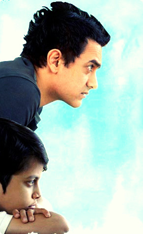
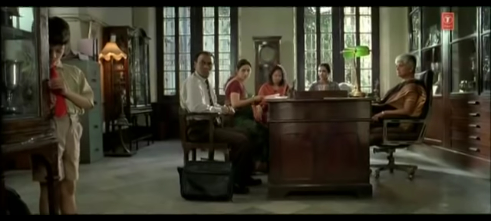

Understanding Disability
A case study of the flim -Taare Zameen Par

Author: Humaira Mariyam B
Date published: 10 August, 2020
Taare Zameen Par is a 2007 Indian Hindi-language drama film produced and directed by Aamir Khan which gives a new definition to disability. The film is centred around the life and imagination of Ishaan, an 8-year-old dyslexic child with special needs. The story revolves around the struggle of this dyslexic child who finds it hard to adjust and compete in the normal world where competition is the only standard and the constructed and enforced uniformity is dominant. This film is remarkable as it not only entertained the audience but also represented dyslexia- a kind of disability with great nuance that made the audience more aware about the sensitivity with which a disability needs to be addressed. This film not only addresses the issue but also very beautifully brings out a solution, a rather inclusive idea which is more important today to be considered. The basic idea that the film portrays is that every child is unique and special. If a child lags or doesn’t go with the flow created by the society, it doesn’t mean that he or she is incapable. Often people who go out of the normalcy or the track are marginalized. This film is a great example of how it should not work that way. This essay is an attempt to analyse the film in relation to disability under its social and medical model.
A disability can generally be defined as a situation which may limit a person from completing a work in a similar way as any non-disabled person. Disability affects individuals in many different ways. Generally, the 'disabled' is linked with physical or mental impairments. The common perception is that people with disabilities are completely different, and therefore, need to be treated differently. unfortunately, this kind of labelling in itself discriminates them and leads to their marginalization in the society.

This film follows the social model of disability considering the special education model put forth by Thompson. As mentioned above, there are two dominant models in Disability studies – the medical model of disability, and the social model of disability. The medical model of disability is a very old and a traditional approach which considers disability as a problem or an error. This model looks at our bodies as a machine or a mere object. When any part of the machine or object goes wrong or is at fault, the medical model tries to fix the broken or the faulty parts. The medical model would be a limited way of understanding the lives of persons with disabilities as it would locate the people with disabilities as the source of the problem. Further, the model would also underline how persons with disabilities, by means of curing needs to be fitted into the so-called normative society.
There are several instances in the film, where Ishaan’s family would want him to be as normal as any other kid, and without understanding what his actual problem was, they were just intimidated by Ishaan’s school principal who affirms that he might have mental problems and they would fail to retain him in the school if he didn’t show any progress. In order to rectify the wrong, Ishaan’s family decides to put him in a boarding school hoping that he would get better. They are just trying to debug him and bring him back into a normal machine ready for the race of life, exactly as how the medical model works which has a low scope and often disregards or neglects other important aspects.

This could be a problematic understanding as Simi Linton points out. She looks at how disability studies differ from other approaches. By giving an instance of fist and palm, where the fist denotes people with disabilities and the open palm denotes the society ready to receive the fist, she says, “In disability studies, the lens is turned towards the representational and institutional structures that constitute the left hand to discover what kinds of analyses and interventions can reconstruct the left hand and make for a better fit” (518). On the other hand, the social model considers disability as society’s attitude towards that which is not a problem of an individual but of the environment in which he or she lives which indeed makes him or her feel disabled or removed from the constructed natural or the normalcy. The scenes from the film will be discussed and analysed further based on the social model of disability.